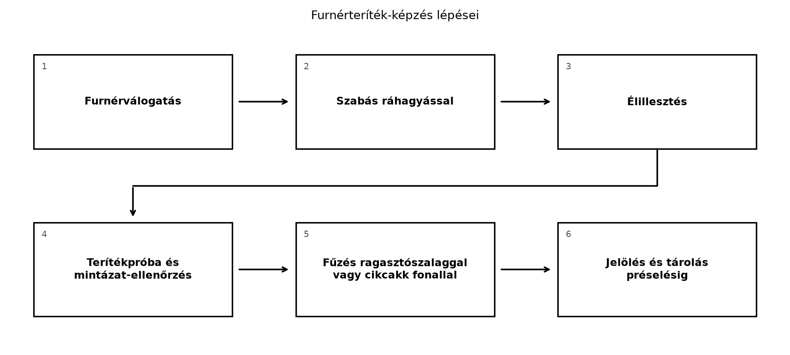

A furnérozott bútorlap minősége nagyrészt a préselés előtt eldől. Ha a furnérterítéket rossz sorrendben, görbe éllel vagy hibás ráhagyással fűzöd össze, a présgép már nem javítja ki: hullámos, feszes, tükrözetlen felületet kapsz, és a drága díszfurnér mehet a hulladékba. Ebben az alfejezetben a borítóanyag szabását, illesztését és furnérterítékké való összeállítását tanulod meg, a furnérolló és a furnérfűző gép biztonságos használatával.
Képzeld el a furnérköteget úgy, mint egy kártyapaklit. A kötegben a lapok abból a sorrendből jönnek, ahogyan a rönkből lehámozták vagy lekésezték őket. Ha a lapokat kinyitod, mint egy könyvet, akkor két szomszédos lap egymás tükörképét adja: az egyik oldal „jobb”, a másik „bal” rajzolat. Ezt a tulajdonságot használjuk ki a tükrös furnérképhez. Egy 1200 mm × 600 mm kész méretű asztallap tetejéhez például körülbelül 5 db 145 mm széles és 1240 mm hosszú furnérsáv kell, ha oldalanként 20 mm ráhagyást számolunk.
Definíció. A furnérteríték a furnérozandó lap színoldalára kerülő, egymáshoz illesztett és ideiglenesen összefűzött furnérlapok összessége, amelyet a préselés előtt készítünk el. A hátoldalra kerülő kiegyenlítő furnért ellenfurnérnak (hátoldali kiegyenlítő furnér) nevezzük, lásd a 27.3 alfejezetet, és sokszor ugyanabból a fafajból, de gyengébb minőségből választjuk.
Furnérválogatás. A furnérkötegből dolgozunk: egy köteg azonos rönkből, folyamatos vágási sorrendben tartalmazza a lapokat. A válogatásnál figyelni kell a következőkre:
Ráhagyás. A furnérteríték mindig nagyobb, mint a furnérozott alkatrész kész mérete. A többletet ráhagyásnak nevezzük. A ráhagyás arra való, hogy a préselés közbeni enyhe elmozdulást, a furnér enyhe dagadását vagy a szélek berepedezését a préselés utáni méretre vágásnál el tudjuk tüntetni. Tájékoztató érték oldalanként 15–30 mm; a pontos érték a préselés módjától, a furnér vastagságától és a műhely gyakorlatától függ (ellenőrizendő: gyártói adat, műhelyi előírás).
Szabály. A furnérteríték rostiránya lehetőleg a furnérozott lap hosszirányával párhuzamos legyen, vagy a szerkezeti rajz szerint; a hátoldali ellenfurnér rostiránya és vastagsága egyezzen a színoldalival, hogy a nedvesség okozta feszültség ne húzza el a lapot.

A folyamat minden lépését úgy végezd, hogy a színoldali és a hátoldali furnért külön terítékként készíted elő, de a méretet és a rostirányt egyezteted.
A furnérokat a teríték méreténél nagyobbra, az illesztési sávokra szabjuk. Két fő kézi/gépi módszer van.
Furnérkéssel vékony, 0,3–0,6 mm vastag furnérokat vághatunk egyenes vonal mentén. A furnért sima, kemény alátétre fektetjük, acélvonalzót helyezünk a vágásvonalra, és a kést húzva, többszöri áthúzással vágjuk át. A kés pengéje mindig éles legyen; tompa késsel a furnér széle roncsolódik, és az illesztésnél hézag keletkezik. A vágásnál a furnér színoldala legyen felül, mert a kés a felső élt vágja tisztábban. A rostiránnyal párhuzamos vágás könnyebb, a rostirányra merőleges vágáshoz gyakran krétával jelöljük a vonalat, és óvatosabban vágunk.
Furnérolló (más néven furnérvágó olló) hosszú, egyenes vágóélű gép. A furnért a gép asztalára fektetik, a vágásvonalat a felső kés alá igazítják, majd a kar lenyomásával a kés átvágja a furnért. A vágóél hossza gyakran több méter, ezért egyszerre több furnérlapot is szabhatunk. A furnérollóval csak egyenes vonalú vágást végzünk, és a vágás gyors, pontos, tiszta. Az ütköző beállításával azonos szélességű sávokat vághatunk. A furnérolló előnye, hogy a vágás közben a furnér nem csúszik el, és az élek párhuzamosak. A vágott él azonban nem mindig elég sima a közvetlen illesztéshez, ezért utána gyakran élillesztést végzünk.
A furnérsávok élei csak akkor zárnak hézagmentesen, ha az élek egyenesek és derékszögben állnak a furnér síkjára. A furnér éleit furnérfűrésszel vagy furnérgyaluval illesztjük.
Az illesztés után a sávokat szárazon egymás mellé téve szemrevételezzük: az éleknek szárazon, fény felé tartva is hézagmentesen kell záródniuk; látható fényrés nem megengedett (ellenőrizendő: műhelyi minőségi előírás). A túl nagy hézagot a préselés után a csiszolás nem tünteti el, mert a furnér alól a ragasztó vagy a hordozó lap színe átlátszik.
A furnérteríték mintázata a furnérsávok elrendezéséből adódik. Négy alapvető elrendezést használunk.
Furnérteríték-mintázatok rajza. A rajzon a furnérterítéket felülnézetben ábrázoljuk, színoldal felől; a méreteket mm-ben, a rostirányt nyíllal adjuk meg. Egy 1200 mm × 600 mm-es furnérteríték rajzán a hosszirányú sávok 145 mm szélesek; a középső sáv teljes, a két-két oldalsó sáv tükröződik. A sávok találkozásánál vékony illesztési vonalat húzunk; a furnér anyagát a faipari szakrajz szerint rostirányú jelekkel, a furnér vastagságát metszeten vonalvastagsággal jelöljük. A rajz mellett anyagjegyzékben megadjuk a sávok számát, kész méretét és típusát.
A négy minta különbségét és a lapok kötegbeli sorrendjét az alábbi ábra mutatja; a tükrös és a négyes tükör mintában minden második lapot könyvlapként átfordítunk.
A kiválasztott, leszabott és élillesztett furnérsávokat a préselés előtt ideiglenesen össze kell fogni. Erre szolgál a furnérteríték-képzés befejező lépése, a fűzés.
A furnérsávokat a színoldalon felfelé, a mintának megfelelően egymás mellé fektetjük. Az illesztési hézagokra ragasztószalagot, leggyakrabban perforált vagy nedvesíthető papírszalagot fektetünk. A szalag nem lehet túl vastag, és préselés után csiszolással eltávolítjuk. A ragasztószalag előnye, hogy olcsó, gyors; hátránya, hogy a nedvesített szalag a furnér szélét megnedvesítheti, ezért a préselés előtt hagyni kell megszáradni, különben a furnér hullámosodik.
A furnérfűző gép (fűzőgép) a furnérsávok találkozásánál melegen olvadó ragasztófonalat fektet cikcakk vonalban, és rányomja a furnérra. A gép a furnérterítéket görgők segítségével, egyenletes sebességgel továbbítja; a fonalat fűtött fej olvasztja meg. A cikcakk fonal nem hagy vastag nyomot, mert a préseléskor a furnérba simul; a fonal anyaga hőre lágyuló műanyag (pontos típus a gyártó adata szerint, ellenőrizendő). A fűzés lehet kézi adagolású asztali gép, de nagyobb műhelyekben automatikus furnérfűző vonalak is előfordulnak.
A fűzőgép működtetésénél ügyelj a fonal hőmérsékletére, a fonal adagolására és a furnér előtolására. A fűzés fonala ne legyen túl feszes, mert összehúzhatja a sávokat és hullámot okoz; túl laza fűzésnél viszont a sávok szétnyílnak.
Gépbiztonság. A furnérollót és a furnérfűző gépet csak betanított, felügyelt tanuló kezelheti; védőburkolat nélkül, egyedül, fáradtan ne dolgozz. A furnérolló hosszú vágókése éles; a vágás közben a kéznek a kés elé kerülnie tilos. A fűzőgép fűtött feje, ragasztófonala és előtoló görgői égési, becsípési sérülést okozhatnak; a burkolatot ne távolítsd el. Minden beállítás, takarítás előtt áramtalanítsd a gépet, és várd meg, amíg a fűtött részek lehűlnek.
Technológiai előkészítő. A furnérteríték készítésének megkezdése előtt:
Számítás. Adott egy furnérozandó asztallap kész mérete 800 mm × 400 mm. A ráhagyás oldalanként 20 mm. A furnérteríték szabási mérete:
A hátoldalra ugyanekkora területű ellenfurnért számolunk, így a teljes furnérteríték-szükséglet ≈ 2 × 0,37 = 0,74 m². Ez a terület nem a préselés utáni kész méret, hanem a ráhagyásos szabási méret; a ténylegesen felhasznált furnér a sávok méretéből és a fűzési hulladékból adódik.
Számítás. Egy 1200 mm × 600 mm kész méretű előlaphoz tükrös (könyvszerű) mintát akarunk készíteni. A ráhagyás oldalanként 25 mm. A szabási teríték mérete:
A rendelkezésre álló késelt furnérlapok hasznos szélessége 145 mm, hossza 1500 mm. A 650 mm szélességű terítékhez szükséges sávok száma:
A tükrös mintához azonban páros sávszám kell, hogy minden sávnak meglegyen a tükörképe, ezért 6 sávot használunk (három tükrös pár). A színoldalra 6 sáv, a hátoldalra 6 ellenfurnér sáv kell, összesen 12 furnérsáv. A sávok hosszát a teríték hosszánál 1250 mm-re vágjuk; a 1500 mm hosszúságú furnérlapból sávonként 250 mm hulladék keletkezik. Ellenőrzés: 6 × 145 mm = 870 mm ≥ 650 mm, tehát a ráhagyásos szélesség megvan; a szélső sávokat és a felesleget a teríték méretére vágjuk (vagy a hat sávot egyenként 650/6 ≈ 108 mm szélesre szabjuk). ∎
Cél: 800 mm × 400 mm kész méretű bútorlapra 0,6 mm vastag késelt tölgy furnérból tükrös furnérterítéket készíteni (szabási méret oldalanként 25 mm ráhagyással 850 × 450 mm); a hátoldalraz ellenfurnér kerül.
Anyagok: tölgy késelt furnér, tölgy ellenfurnér (gyengébb minőség, hasonló zsugorodású fafaj), furnérragasztószalag vagy cikcakk fonal, acélvonalzó, mérőeszközök.
Szerszámok, gépek: furnérolló, furnérfűrész vagy furnérgyalu, furnérfűző gép, derékszögelő, ragasztószalag-adagoló, csiszolólap finom szemcsével.
Gépbiztonság. A furnérollót és a fűzőgépet csak betanított, felügyelt tanuló használja; a vágókést és a fűtött fejet védőburkolat fedje. Egyéni védőeszköz: védőszemüveg, a furnér mozgatásához kesztyű, a fűtött gép beállításánál hőálló kesztyű; porelszívás, ha furnérfűrészt használsz, és szükség esetén légzésvédő.
Indítás előtti ellenőrzés. A furnérolló kése éles és párhuzamos az ütközővel; a fűzőgép fonala fel van fűzve, a hőmérséklet a gyártó adata szerinti; a furnérokon nincs szeg, kő, fém; a munkaterület tiszta, a vészleállító elérhető.
Lépések:
A furnérterítéket préselés előtt mindig ellenőrizd.
Eltérésnél a hibás sávot cseréld, vagy az illesztést ismételd; a préselés előtt minden hibát javítani kell, mert utána a furnérteríték hibája a kész felületen is megjelenik.
A furnérteríték préselés után hullámos, a sávok közötti vonal látszik. Oka lehet rossz élillesztés: a furnér élek nem egyenesek, vagy nem derékszögben állnak; a fűzés fonala túl feszes, és összehúzza a sávokat. A helyes gyakorlat az élillesztés utáni száraz próba, és a fűzés feszességének ellenőrzése.
A tükrözés nem pontos, az egyik oldal rajzolata „elcsúszott”. Oka a furnérköteg sorrendjének keveredése, vagy a lapok rossz oldalról való megfordítása. A lapokat mindig a hátoldalon jelöld, és a köteg sorrendjét tartsd.
A préselés után a furnér széle berepedt vagy kicsorbult, mert kevés volt a ráhagyás. Oka a ráhagyás hibás számítása vagy a préselés közbeni elmozdulás. A ráhagyást a kész méretre és a préselési gyakorlatra méretezd, és a terítéket préselés előtt rögzítsd.
A furnérteríték megégése, a fűzőfonal átolvasztása. Oka a fűzőgép túl magas hőmérséklete, vagy az előtolás leállítása a fűtött fej alatt. A gép hőmérsékletét mindig a gyártó adata szerint állítsd be, és ha megállsz, húzd ki a furnért a fűtőzónából.
Hibaelemzési eset.
Tünet: A préselés után egy 600 mm × 400 mm-es furnérozott előlap színoldalán az egyik tükrös sáv hullámos, a préselés során a furnér felpúposodott, és a felületkezelés után a hiba felerősödött.
Lehetséges okok: a furnér nedvességtartalma túl alacsony vagy túl magas; a fűzés nem rögzítette a sávot; a ragasztó nem terült; a présnyomás egyenetlen; a hátoldali ellenfurnér nem azonos rostirányú.
Vizsgálat: A műhelyben ellenőrizték a visszamaradt furnérokat: a nedvességtartalom 5 % alatt volt, a fűzés cikcakk fonala túl feszesen húzta a sávot, és a hátoldalon az ellenfurnér rostiránya 90°-kal eltért.
Valódi ok: A furnérokat nem kondicionálták préselés előtt; a fűzőgép fonala összehúzta a sávot; a hátoldali ellenfurnér rostiránya nem kompenzálta a színoldali furnér mozgását.
Javítás: A hibás terítéket le kellett csiszolni, és a lapot újra furnérozni; a kész bútorlap nem volt javítható.
Megelőzés: A furnérokat a műhely klímájához igazodó fanedvességre kondicionáljuk; a fűzés fonalának feszességét szabályozzuk; a hátoldali ellenfurnér rostirányát a színoldalival azonossá tesszük.
Egy asztalos műhely dió furnéros étkezőasztalt készített. A furnért a megrendelő kérésére „tükrösen” kellett elrendezni. Az asztalos a furnérlapokat a kötegből nem a sorrend szerint válogatta, hanem egyszerűen egymás mellé tette a szebb rajzolatú lapokat. A préselés után az asztallap közepén a két oldal színe és rajzolata nem tükrözött: az egyik oldalon a sötét évgyűrűvonalak kifelé, a másikon befelé futottak, és a lap „mozgalmas” lett. A megrendelő nem vette át. A hibás furnért le kellett csiszolni, és a lapot újra kellett furnérozni; a darab csak ezzel a teljes újrafurnérozással volt menthető. A tanulság az, hogy a furnérteríték soha nem csak szabás és fűzés: a furnérköteg sorrendje, a színoldal, a rostirány és a minta kiválasztása együttesen minőségi tényező.
A válaszokat lásd a Megoldások elején.
1. feladat (A). Fogalmazd meg röviden: mi a furnérteríték és mi a ráhagyás?
2. feladat (A). Egy furnéros lap kész mérete 600 mm × 300 mm. Oldalanként 20 mm ráhagyást számolva add meg a furnérteríték szabási méretét mm-ben és a teríték területét m²-ben.
3. feladat (B). Erre a terítékre a hosszirányú sávokat 150 mm széles furnérból készíted. Hány sáv kell a színoldalra, ha a szabási szélesség 340 mm? Mennyi a színoldal és a hátoldal összes sávszáma, ha a hátoldalra ugyanannyi ellenfurnér sáv kell?
4. feladat (B). Ismert a furnérolló és a furnérfűző gép: sorold fel, milyen védőberendezéseket és egyéni védőeszközöket használnál a munkához, és miért tilos a vágókést burkolat nélkül üzemeltetni?
5. feladat (C). Egy préselés után a furnérteríték sávjai közötti illesztésnél a ragasztó alól a hordozó lap színe átlátszik. Mi lehet a hiba oka, és hogyan előzheted meg a következő gyártásnál? Vizsgáld meg a lehetséges okokat, és válaszd ki a legvalószínűbbet.
6. feladat (D). Tervezd meg egy 1000 mm × 500 mm kész méretű asztallap furnérterítékét: válassz tükrös mintát, számold ki a szükséges furnérsávok számát 160 mm-es sávszélességgel, oldalanként 25 mm ráhagyással, és írd le a munkafolyamat lépéseit a válogatástól a préselésig. Jelöld, hol ellenőriznéd a minőséget.
Önellenőrzés – válaszok
1. feladat megoldása (A). A furnérteríték a színoldali furnérsávok préselésre előkészített együttese; a ráhagyás a kész méreten felüli többlet, amelyet préselés után vágnak le.
2. feladat megoldása (A). A szabási hossz ; a szabási szélesség ; a teríték területe .
3. feladat megoldása (B). A szabási szélesség 340 mm; 150 mm-es sávokból: , tehát 3 sáv kell. A színoldalra 3, a hátoldalra 3, összesen 6 sáv.
4. feladat megoldása (B). A furnérollónál a hosszú kést védőburkolat, ujjvédő és ütköző védi; a fűzőgépnél a fűtött fej és az előtoló görgők burkolata, vészleállító, elszívás. Egyéni védőeszköz: védőszemüveg, kesztyű a furnér mozgatásához, hőálló kesztyű a fűzőgép beállításánál. A vágókést burkolat nélkül üzemeltetni tilos, mert a kéz becsúszhat, és súlyos vágási sérülés keletkezik.
5. feladat megoldása (C). A ragasztó alól átlátszó hordozó a sávok közötti hézagra utal. Ok lehet: nem egyenes élillesztés, a furnérgyalu/fűrész éle tompa, a fűzés nem húzta össze a sávokat, vagy a furnér élén a ragasztószalag benyomódott. Legvalószínűbb az élillesztés hibája, mert a fűzés nem tudja pótolni a görbe élt; a helyes gyakorlat az élek száraz illesztése és hézagmentes próba a préselés előtt.
6. feladat megoldása (D). A szabási méret: hossz ; szélesség . A 160 mm széles sávokból: , tehát 4 sáv. A tükrös minta: a négy sáv két tükrös pár (1-2 és 3-4), vagy 2+2 páros elrendezés. A színoldalra 4, a hátoldalra 4 sáv kell, összesen 8 sáv. Lépések: válogatás, szabás 1050×160 mm-es sávokra, élillesztés, száraz terítékpróba tükrözés, fűzés a hézagok mentén, hátoldali ellenfurnér előkészítése, préselésig jelölés és sík tárolás. Ellenőrzés: a szabási méret, a sávok egyenlő szélessége, a hézagok záródása, a fűzés feszessége, és a hátoldali furnér méret/rostirány azonossága.
A furnérteríték a préselésre előkészített, színoldali furnérsávok összessége, amelyet a faipari gyakorlatban a furnérválogatás, szabás, élillesztés és fűzés lépéseivel alakítunk ki. A furnért úgy kell szabni, hogy a kész méretnél oldalanként ráhagyással nagyobb legyen; a hátoldalra azonos vastagságú, azonos rostirányú ellenfurnér kerül. A furnérolló hosszú, párhuzamos vágásra alkalmas; a fűzőgép cikcakk ragasztófonalat fektet az illesztési hézagokra. Az illesztési minták: csúsztatott, tükrös, rombusz, négyes tükör; a tükrös mintához páros számú, azonos szélességű, a furnérköteg sorrendjéből származó sáv kell. A préselés előtti ellenőrzés feltárja a hézagot, a fűzési hibát és a mérettűrést; préselés után a terítékhiba már csak teljes újrafurnérozással javítható. Továbbvitt eredmény: az így elkészített furnérterítéket préseljük rá a hordozó lapra a Lapok furnérozása, préselés utáni műveletek, hibák és íves felületek borítása alfejezetben; ott a fűzés és a ráhagyás szerepe a préselési technológiában folytatódik.